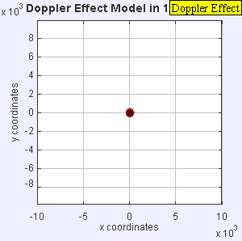
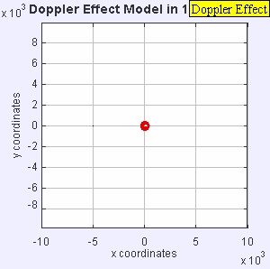
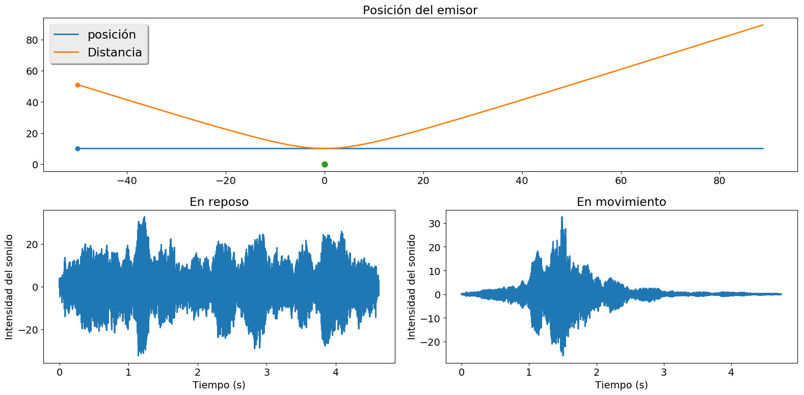
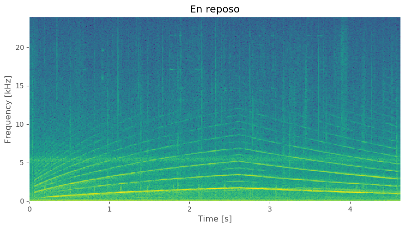
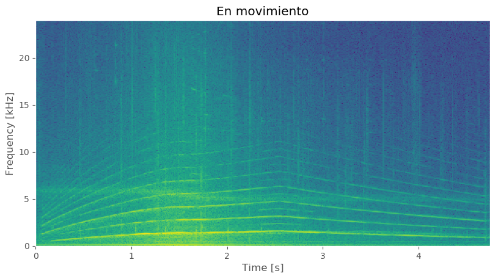

Efecto Doppler¶
Cuando el emisor de un sonido se mueve respecto al oyente, la frecuencia se modifica debido a lo que conocemos como efecto Doppler. Si emisor y oyente se acercan el tono se vuelve más agudo, mientras que si se alejan el oyente escucha un tono más grave. Esto ocurre debido a que las ondas llegan temporalmente más cerca una de otra para el oyente en la dirección del movimiento, y más lejos en la dirección opuesta, como muestran las figuras.  
Considere la situación en que una fuente de sonido se mueve con velocidad relativa $v$ respecto a un oyente.
El objetivo de este trabajo es convertir el sonido original al sonido que escucharía un oyente, teniendo en cuenta el efecto Doppler.
En este ejercicio se pide que, utilizando las bibliotecas científicas de Python que se usaron en el curso, haga un programa para:
- Leer el archivo de audio
- Convertir el sonido al aparente por un oyente con una velocidad relativa arbitraria. Guardar el sonido en un archivo.
- Realice un gráfico similar al siguiente (o mejor) 
- Calcule el espectrograma (similar al realizado en clases) para el sonido con y sin efecto Doppler. Similar a las siguientes figuras:  
- Utilizando el módulo
argparse, su programa debe aceptar por línea de comandos al menos las siguientes opciones:
- Nombre del archivo de entrada indicado por el usuario
- Nombre del archivo de salida indicado por el usuario (dando un valor adecuado si el usuario no elige uno).
- La velocidad del emisor, como un vector bidimensional